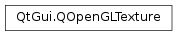

QOpenGLTexture¶
Note
This class was introduced in Qt 5.2.
Synopsis¶
Functions¶
- def
allocateStorage() - def
allocateStorage(pixelFormat, pixelType) - def
bind() - def
bind(unit[, reset=DontResetTextureUnit]) - def
borderColor() - def
comparisonFunction() - def
comparisonMode() - def
create() - def
createTextureView(target, viewFormat, minimumMipmapLevel, maximumMipmapLevel, minimumLayer, maximumLayer) - def
depth() - def
depthStencilMode() - def
destroy() - def
faces() - def
format() - def
generateMipMaps() - def
generateMipMaps(baseLevel[, resetBaseLevel=true]) - def
height() - def
isAutoMipMapGenerationEnabled() - def
isBound() - def
isBound(unit) - def
isCreated() - def
isFixedSamplePositions() - def
isStorageAllocated() - def
isTextureView() - def
layers() - def
levelOfDetailRange() - def
levelofDetailBias() - def
magnificationFilter() - def
maximumAnisotropy() - def
maximumLevelOfDetail() - def
maximumMipLevels() - def
minMagFilters() - def
minificationFilter() - def
minimumLevelOfDetail() - def
mipBaseLevel() - def
mipLevelRange() - def
mipLevels() - def
mipMaxLevel() - def
release() - def
release(unit[, reset=DontResetTextureUnit]) - def
samples() - def
setAutoMipMapGenerationEnabled(enabled) - def
setBorderColor(color) - def
setBorderColor(r, g, b, a) - def
setBorderColor(r, g, b, a) - def
setBorderColor(r, g, b, a) - def
setComparisonFunction(function) - def
setComparisonMode(mode) - def
setCompressedData(dataSize, data[, options=nullptr]) - def
setCompressedData(dataSize, data[, options=nullptr]) - def
setCompressedData(mipLevel, dataSize, data[, options=nullptr]) - def
setCompressedData(mipLevel, dataSize, data[, options=nullptr]) - def
setCompressedData(mipLevel, layer, cubeFace, dataSize, data[, options=nullptr]) - def
setCompressedData(mipLevel, layer, cubeFace, dataSize, data[, options=nullptr]) - def
setCompressedData(mipLevel, layer, dataSize, data[, options=nullptr]) - def
setCompressedData(mipLevel, layer, dataSize, data[, options=nullptr]) - def
setCompressedData(mipLevel, layer, layerCount, cubeFace, dataSize, data[, options=nullptr]) - def
setData(image[, genMipMaps=GenerateMipMaps]) - def
setData(mipLevel, layer, cubeFace, sourceFormat, sourceType, data[, options=nullptr]) - def
setData(mipLevel, layer, cubeFace, sourceFormat, sourceType, data[, options=nullptr]) - def
setData(mipLevel, layer, layerCount, cubeFace, sourceFormat, sourceType, data[, options=nullptr]) - def
setData(mipLevel, layer, sourceFormat, sourceType, data[, options=nullptr]) - def
setData(mipLevel, layer, sourceFormat, sourceType, data[, options=nullptr]) - def
setData(mipLevel, sourceFormat, sourceType, data[, options=nullptr]) - def
setData(mipLevel, sourceFormat, sourceType, data[, options=nullptr]) - def
setData(sourceFormat, sourceType, data[, options=nullptr]) - def
setData(sourceFormat, sourceType, data[, options=nullptr]) - def
setDepthStencilMode(mode) - def
setFixedSamplePositions(fixed) - def
setFormat(format) - def
setLayers(layers) - def
setLevelOfDetailRange(min, max) - def
setLevelofDetailBias(bias) - def
setMagnificationFilter(filter) - def
setMaximumAnisotropy(anisotropy) - def
setMaximumLevelOfDetail(value) - def
setMinMagFilters(minificationFilter, magnificationFilter) - def
setMinificationFilter(filter) - def
setMinimumLevelOfDetail(value) - def
setMipBaseLevel(baseLevel) - def
setMipLevelRange(baseLevel, maxLevel) - def
setMipLevels(levels) - def
setMipMaxLevel(maxLevel) - def
setSamples(samples) - def
setSize(width[, height=1[, depth=1]]) - def
setSwizzleMask(component, value) - def
setSwizzleMask(r, g, b, a) - def
setWrapMode(direction, mode) - def
setWrapMode(mode) - def
swizzleMask(component) - def
target() - def
textureId() - def
width() - def
wrapMode(direction)
Static functions¶
- def
boundTextureId(target) - def
boundTextureId(unit, target) - def
hasFeature(feature)
Detailed Description¶
The
PySide2.QtGui.QOpenGLTextureclass encapsulates an OpenGL texture object.
PySide2.QtGui.QOpenGLTexturemakes it easy to work with OpenGL textures and the myriad features and targets that they offer depending upon the capabilities of your OpenGL implementation.The typical usage pattern for
PySide2.QtGui.QOpenGLTextureis
- Instantiate the object specifying the texture target type
- Set properties that affect the storage requirements e.g. storage format, dimensions
- Allocate the server-side storage
- Optionally upload pixel data
- Optionally set any additional properties e.g. filtering and border options
- Render with texture or render to texture
In the common case of simply using a
PySide2.QtGui.QImageas the source of texture pixel data most of the above steps are performed automatically.// Prepare texture QOpenGLTexture *texture = new QOpenGLTexture(QImage(fileName).mirrored()); texture->setMinificationFilter(QOpenGLTexture::LinearMipMapLinear); texture->setMagnificationFilter(QOpenGLTexture::Linear); ... // Render with texture texture->bind(); glDrawArrays(...);Note that the
PySide2.QtGui.QImageis mirrored vertically to account for the fact that OpenGL andPySide2.QtGui.QImageuse opposite directions for the y axis. Another option would be to transform your texture coordinates.
-
class
PySide2.QtGui.QOpenGLTexture(target)¶ -
class
PySide2.QtGui.QOpenGLTexture(image[, genMipMaps=GenerateMipMaps]) Parameters: - genMipMaps –
PySide2.QtGui.QOpenGLTexture.MipMapGeneration - image –
PySide2.QtGui.QImage - target –
PySide2.QtGui.QOpenGLTexture.Target
Creates a
PySide2.QtGui.QOpenGLTextureobject that can later be bound totarget.This does not create the underlying OpenGL texture object. Therefore, construction using this constructor does not require a valid current OpenGL context.
Creates a
PySide2.QtGui.QOpenGLTextureobject that can later be bound to the 2D texture target and contains the pixel data contained inimage. If you wish to have a chain of mipmaps generated then setgenMipMapstotrue(this is the default).This does create the underlying OpenGL texture object. Therefore, construction using this constructor does require a valid current OpenGL context.
- genMipMaps –
-
PySide2.QtGui.QOpenGLTexture.Target¶ This enum defines the texture target of a
PySide2.QtGui.QOpenGLTextureobject.Constant Description QOpenGLTexture.Target1D A 1-dimensional texture. Equivalent to GL_TEXTURE_1D. QOpenGLTexture.Target1DArray An array of 1-dimensional textures. Equivalent to GL_TEXTURE_1D_ARRAY QOpenGLTexture.Target2D A 2-dimensional texture. Equivalent to GL_TEXTURE_2D QOpenGLTexture.Target2DArray An array of 1-dimensional textures. Equivalent to GL_TEXTURE_2D_ARRAY QOpenGLTexture.Target3D A 3-dimensional texture. Equivalent to GL_TEXTURE_3D QOpenGLTexture.TargetCubeMap A cubemap texture. Equivalent to GL_TEXTURE_CUBE_MAP QOpenGLTexture.TargetCubeMapArray An array of cubemap textures. Equivalent to GL_TEXTURE_CUBE_MAP_ARRAY QOpenGLTexture.Target2DMultisample A 2-dimensional texture with multisample support. Equivalent to GL_TEXTURE_2D_MULTISAMPLE QOpenGLTexture.Target2DMultisampleArray An array of 2-dimensional textures with multisample support. Equivalent to GL_TEXTURE_2D_MULTISAMPLE_ARRAY QOpenGLTexture.TargetRectangle A rectangular 2-dimensional texture. Equivalent to GL_TEXTURE_RECTANGLE QOpenGLTexture.TargetBuffer A texture with data from an OpenGL buffer object. Equivalent to GL_TEXTURE_BUFFER
-
PySide2.QtGui.QOpenGLTexture.BindingTarget¶ This enum defines the possible binding targets of texture units.
Constant Description QOpenGLTexture.BindingTarget1D Equivalent to GL_TEXTURE_BINDING_1D QOpenGLTexture.BindingTarget1DArray Equivalent to GL_TEXTURE_BINDING_1D_ARRAY QOpenGLTexture.BindingTarget2D Equivalent to GL_TEXTURE_BINDING_2D QOpenGLTexture.BindingTarget2DArray Equivalent to GL_TEXTURE_BINDING_2D_ARRAY QOpenGLTexture.BindingTarget3D Equivalent to GL_TEXTURE_BINDING_3D QOpenGLTexture.BindingTargetCubeMap Equivalent to GL_TEXTURE_BINDING_CUBE_MAP QOpenGLTexture.BindingTargetCubeMapArray Equivalent to GL_TEXTURE_BINDING_CUBE_MAP_ARRAY QOpenGLTexture.BindingTarget2DMultisample Equivalent to GL_TEXTURE_BINDING_2D_MULTISAMPLE QOpenGLTexture.BindingTarget2DMultisampleArray Equivalent to GL_TEXTURE_BINDING_2D_MULTISAMPLE_ARRAY QOpenGLTexture.BindingTargetRectangle Equivalent to GL_TEXTURE_BINDING_RECTANGLE QOpenGLTexture.BindingTargetBuffer Equivalent to GL_TEXTURE_BINDING_BUFFER
-
PySide2.QtGui.QOpenGLTexture.MipMapGeneration¶ This enum defines the options to control mipmap generation.
Constant Description QOpenGLTexture.GenerateMipMaps Mipmaps should be generated QOpenGLTexture.DontGenerateMipMaps Mipmaps should not be generated
-
PySide2.QtGui.QOpenGLTexture.TextureUnitReset¶ This enum defines options ot control texture unit activation.
Constant Description QOpenGLTexture.ResetTextureUnit The previous active texture unit will be reset QOpenGLTexture.DontResetTextureUnit The previous active texture unit will not be rest
-
PySide2.QtGui.QOpenGLTexture.TextureFormat¶ This enum defines the possible texture formats. Depending upon your OpenGL implementation only a subset of these may be supported.
Constant Description QOpenGLTexture.NoFormat Equivalent to GL_NONE QOpenGLTexture.R8_UNorm Equivalent to GL_R8 QOpenGLTexture.RG8_UNorm Equivalent to GL_RG8 QOpenGLTexture.RGB8_UNorm Equivalent to GL_RGB8 QOpenGLTexture.RGBA8_UNorm Equivalent to GL_RGBA8 QOpenGLTexture.R16_UNorm Equivalent to GL_R16 QOpenGLTexture.RG16_UNorm Equivalent to GL_RG16 QOpenGLTexture.RGB16_UNorm Equivalent to GL_RGB16 QOpenGLTexture.RGBA16_UNorm Equivalent to GL_RGBA16 QOpenGLTexture.R8_SNorm Equivalent to GL_R8_SNORM QOpenGLTexture.RG8_SNorm Equivalent to GL_RG8_SNORM QOpenGLTexture.RGB8_SNorm Equivalent to GL_RGB8_SNORM QOpenGLTexture.RGBA8_SNorm Equivalent to GL_RGBA8_SNORM QOpenGLTexture.R16_SNorm Equivalent to GL_R16_SNORM QOpenGLTexture.RG16_SNorm Equivalent to GL_RG16_SNORM QOpenGLTexture.RGB16_SNorm Equivalent to GL_RGB16_SNORM QOpenGLTexture.RGBA16_SNorm Equivalent to GL_RGBA16_SNORM QOpenGLTexture.R8U Equivalent to GL_R8UI QOpenGLTexture.RG8U Equivalent to GL_RG8UI QOpenGLTexture.RGB8U Equivalent to GL_RGB8UI QOpenGLTexture.RGBA8U Equivalent to GL_RGBA8UI QOpenGLTexture.R16U Equivalent to GL_R16UI QOpenGLTexture.RG16U Equivalent to GL_RG16UI QOpenGLTexture.RGB16U Equivalent to GL_RGB16UI QOpenGLTexture.RGBA16U Equivalent to GL_RGBA16UI QOpenGLTexture.R32U Equivalent to GL_R32UI QOpenGLTexture.RG32U Equivalent to GL_RG32UI QOpenGLTexture.RGB32U Equivalent to GL_RGB32UI QOpenGLTexture.RGBA32U Equivalent to GL_RGBA32UI QOpenGLTexture.R8I Equivalent to GL_R8I QOpenGLTexture.RG8I Equivalent to GL_RG8I QOpenGLTexture.RGB8I Equivalent to GL_RGB8I QOpenGLTexture.RGBA8I Equivalent to GL_RGBA8I QOpenGLTexture.R16I Equivalent to GL_R16I QOpenGLTexture.RG16I Equivalent to GL_RG16I QOpenGLTexture.RGB16I Equivalent to GL_RGB16I QOpenGLTexture.RGBA16I Equivalent to GL_RGBA16I QOpenGLTexture.R32I Equivalent to GL_R32I QOpenGLTexture.RG32I Equivalent to GL_RG32I QOpenGLTexture.RGB32I Equivalent to GL_RGB32I QOpenGLTexture.RGBA32I Equivalent to GL_RGBA32I QOpenGLTexture.R16F Equivalent to GL_R16F QOpenGLTexture.RG16F Equivalent to GL_RG16F QOpenGLTexture.RGB16F Equivalent to GL_RGB16F QOpenGLTexture.RGBA16F Equivalent to GL_RGBA16F QOpenGLTexture.R32F Equivalent to GL_R32F QOpenGLTexture.RG32F Equivalent to GL_RG32F QOpenGLTexture.RGB32F Equivalent to GL_RGB32F QOpenGLTexture.RGBA32F Equivalent to GL_RGBA32F QOpenGLTexture.RGB9E5 Equivalent to GL_RGB9_E5 QOpenGLTexture.RG11B10F Equivalent to GL_R11F_G11F_B10F QOpenGLTexture.RG3B2 Equivalent to GL_R3_G3_B2 QOpenGLTexture.R5G6B5 Equivalent to GL_RGB565 QOpenGLTexture.RGB5A1 Equivalent to GL_RGB5_A1 QOpenGLTexture.RGBA4 Equivalent to GL_RGBA4 QOpenGLTexture.RGB10A2 Equivalent to GL_RGB10_A2UI QOpenGLTexture.D16 Equivalent to GL_DEPTH_COMPONENT16 QOpenGLTexture.D24 Equivalent to GL_DEPTH_COMPONENT24 QOpenGLTexture.D24S8 Equivalent to GL_DEPTH24_STENCIL8 QOpenGLTexture.D32 Equivalent to GL_DEPTH_COMPONENT32 QOpenGLTexture.D32F Equivalent to GL_DEPTH_COMPONENT32F QOpenGLTexture.D32FS8X24 Equivalent to GL_DEPTH32F_STENCIL8 QOpenGLTexture.S8 Equivalent to GL_STENCIL_INDEX8. Introduced in Qt 5.4 QOpenGLTexture.RGB_DXT1 Equivalent to GL_COMPRESSED_RGB_S3TC_DXT1_EXT QOpenGLTexture.RGBA_DXT1 Equivalent to GL_COMPRESSED_RGBA_S3TC_DXT1_EXT QOpenGLTexture.RGBA_DXT3 Equivalent to GL_COMPRESSED_RGBA_S3TC_DXT3_EXT QOpenGLTexture.RGBA_DXT5 Equivalent to GL_COMPRESSED_RGBA_S3TC_DXT5_EXT QOpenGLTexture.R_ATI1N_UNorm Equivalent to GL_COMPRESSED_RED_RGTC1 QOpenGLTexture.R_ATI1N_SNorm Equivalent to GL_COMPRESSED_SIGNED_RED_RGTC1 QOpenGLTexture.RG_ATI2N_UNorm Equivalent to GL_COMPRESSED_RG_RGTC2 QOpenGLTexture.RG_ATI2N_SNorm Equivalent to GL_COMPRESSED_SIGNED_RG_RGTC2 QOpenGLTexture.RGB_BP_UNSIGNED_FLOAT Equivalent to GL_COMPRESSED_RGB_BPTC_UNSIGNED_FLOAT_ARB QOpenGLTexture.RGB_BP_SIGNED_FLOAT Equivalent to GL_COMPRESSED_RGB_BPTC_SIGNED_FLOAT_ARB QOpenGLTexture.RGB_BP_UNorm Equivalent to GL_COMPRESSED_RGBA_BPTC_UNORM_ARB QOpenGLTexture.R11_EAC_UNorm Equivalent to GL_COMPRESSED_R11_EAC QOpenGLTexture.R11_EAC_SNorm Equivalent to GL_COMPRESSED_SIGNED_R11_EAC QOpenGLTexture.RG11_EAC_UNorm Equivalent to GL_COMPRESSED_RG11_EAC QOpenGLTexture.RG11_EAC_SNorm Equivalent to GL_COMPRESSED_SIGNED_RG11_EAC QOpenGLTexture.RGB8_ETC2 Equivalent to GL_COMPRESSED_RGB8_ETC2 QOpenGLTexture.SRGB8_ETC2 Equivalent to GL_COMPRESSED_SRGB8_ETC2 QOpenGLTexture.RGB8_PunchThrough_Alpha1_ETC2 Equivalent to GL_COMPRESSED_RGB8_PUNCHTHROUGH_ALPHA1_ETC2 QOpenGLTexture.SRGB8_PunchThrough_Alpha1_ETC2 Equivalent to GL_COMPRESSED_SRGB8_PUNCHTHROUGH_ALPHA1_ETC2 QOpenGLTexture.RGBA8_ETC2_EAC Equivalent to GL_COMPRESSED_RGBA8_ETC2_EAC QOpenGLTexture.SRGB8_Alpha8_ETC2_EAC Equivalent to GL_COMPRESSED_SRGB8_ALPHA8_ETC2_EAC QOpenGLTexture.RGB8_ETC1 Equivalent to GL_ETC1_RGB8_OES QOpenGLTexture.RGBA_ASTC_4x4 Equivalent to GL_COMPRESSED_RGBA_ASTC_4x4_KHR QOpenGLTexture.RGBA_ASTC_5x4 Equivalent to GL_COMPRESSED_RGBA_ASTC_5x4_KHR QOpenGLTexture.RGBA_ASTC_5x5 Equivalent to GL_COMPRESSED_RGBA_ASTC_5x5_KHR QOpenGLTexture.RGBA_ASTC_6x5 Equivalent to GL_COMPRESSED_RGBA_ASTC_6x5_KHR QOpenGLTexture.RGBA_ASTC_6x6 Equivalent to GL_COMPRESSED_RGBA_ASTC_6x6_KHR QOpenGLTexture.RGBA_ASTC_8x5 Equivalent to GL_COMPRESSED_RGBA_ASTC_8x5_KHR QOpenGLTexture.RGBA_ASTC_8x6 Equivalent to GL_COMPRESSED_RGBA_ASTC_8x6_KHR QOpenGLTexture.RGBA_ASTC_8x8 Equivalent to GL_COMPRESSED_RGBA_ASTC_8x8_KHR QOpenGLTexture.RGBA_ASTC_10x5 Equivalent to GL_COMPRESSED_RGBA_ASTC_10x5_KHR QOpenGLTexture.RGBA_ASTC_10x6 Equivalent to GL_COMPRESSED_RGBA_ASTC_10x6_KHR QOpenGLTexture.RGBA_ASTC_10x8 Equivalent to GL_COMPRESSED_RGBA_ASTC_10x8_KHR QOpenGLTexture.RGBA_ASTC_10x10 Equivalent to GL_COMPRESSED_RGBA_ASTC_10x10_KHR QOpenGLTexture.RGBA_ASTC_12x10 Equivalent to GL_COMPRESSED_RGBA_ASTC_12x10_KHR QOpenGLTexture.RGBA_ASTC_12x12 Equivalent to GL_COMPRESSED_RGBA_ASTC_12x12_KHR QOpenGLTexture.SRGB8_Alpha8_ASTC_4x4 Equivalent to GL_COMPRESSED_SRGB8_ALPHA8_ASTC_4x4_KHR QOpenGLTexture.SRGB8_Alpha8_ASTC_5x4 Equivalent to GL_COMPRESSED_SRGB8_ALPHA8_ASTC_5x4_KHR QOpenGLTexture.SRGB8_Alpha8_ASTC_5x5 Equivalent to GL_COMPRESSED_SRGB8_ALPHA8_ASTC_5x5_KHR QOpenGLTexture.SRGB8_Alpha8_ASTC_6x5 Equivalent to GL_COMPRESSED_SRGB8_ALPHA8_ASTC_6x5_KHR QOpenGLTexture.SRGB8_Alpha8_ASTC_6x6 Equivalent to GL_COMPRESSED_SRGB8_ALPHA8_ASTC_6x6_KHR QOpenGLTexture.SRGB8_Alpha8_ASTC_8x5 Equivalent to GL_COMPRESSED_SRGB8_ALPHA8_ASTC_8x5_KHR QOpenGLTexture.SRGB8_Alpha8_ASTC_8x6 Equivalent to GL_COMPRESSED_SRGB8_ALPHA8_ASTC_8x6_KHR QOpenGLTexture.SRGB8_Alpha8_ASTC_8x8 Equivalent to GL_COMPRESSED_SRGB8_ALPHA8_ASTC_8x8_KHR QOpenGLTexture.SRGB8_Alpha8_ASTC_10x5 Equivalent to GL_COMPRESSED_SRGB8_ALPHA8_ASTC_10x5_KHR QOpenGLTexture.SRGB8_Alpha8_ASTC_10x6 Equivalent to GL_COMPRESSED_SRGB8_ALPHA8_ASTC_10x6_KHR QOpenGLTexture.SRGB8_Alpha8_ASTC_10x8 Equivalent to GL_COMPRESSED_SRGB8_ALPHA8_ASTC_10x8_KHR QOpenGLTexture.SRGB8_Alpha8_ASTC_10x10 Equivalent to GL_COMPRESSED_SRGB8_ALPHA8_ASTC_10x10_KHR QOpenGLTexture.SRGB8_Alpha8_ASTC_12x10 Equivalent to GL_COMPRESSED_SRGB8_ALPHA8_ASTC_12x10_KHR QOpenGLTexture.SRGB8_Alpha8_ASTC_12x12 Equivalent to GL_COMPRESSED_SRGB8_ALPHA8_ASTC_12x12_KHR QOpenGLTexture.SRGB8 Equivalent to GL_SRGB8 QOpenGLTexture.SRGB8_Alpha8 Equivalent to GL_SRGB8_ALPHA8 QOpenGLTexture.SRGB_DXT1 Equivalent to GL_COMPRESSED_SRGB_S3TC_DXT1_EXT QOpenGLTexture.SRGB_Alpha_DXT1 Equivalent to GL_COMPRESSED_SRGB_ALPHA_S3TC_DXT1_EXT QOpenGLTexture.SRGB_Alpha_DXT3 Equivalent to GL_COMPRESSED_SRGB_ALPHA_S3TC_DXT3_EXT QOpenGLTexture.SRGB_Alpha_DXT5 Equivalent to GL_COMPRESSED_SRGB_ALPHA_S3TC_DXT5_EXT QOpenGLTexture.SRGB_BP_UNorm Equivalent to GL_COMPRESSED_SRGB_ALPHA_BPTC_UNORM_ARB QOpenGLTexture.DepthFormat Equivalent to GL_DEPTH_COMPONENT (only OpenGL ES 3 or ES 2 with OES_depth_texture) QOpenGLTexture.AlphaFormat Equivalent to GL_ALPHA (OpenGL ES 2 only) QOpenGLTexture.RGBFormat Equivalent to GL_RGB (OpenGL ES 2 only) QOpenGLTexture.RGBAFormat Equivalent to GL_RGBA (OpenGL ES 2 only) QOpenGLTexture.LuminanceFormat Equivalent to GL_LUMINANCE (OpenGL ES 2 only) QOpenGLTexture.LuminanceAlphaFormat Equivalent to GL_LUMINANCE_ALPHA (OpenGL ES 2 only)
-
PySide2.QtGui.QOpenGLTexture.TextureFormatClass¶
-
PySide2.QtGui.QOpenGLTexture.CubeMapFace¶ This enum defines the possible CubeMap faces.
Constant Description QOpenGLTexture.CubeMapPositiveX Equivalent to GL_TEXTURE_CUBE_MAP_POSITIVE_X QOpenGLTexture.CubeMapNegativeX Equivalent to GL_TEXTURE_CUBE_MAP_NEGATIVE_X QOpenGLTexture.CubeMapPositiveY Equivalent to GL_TEXTURE_CUBE_MAP_POSITIVE_Y QOpenGLTexture.CubeMapNegativeY Equivalent to GL_TEXTURE_CUBE_MAP_NEGATIVE_Y QOpenGLTexture.CubeMapPositiveZ Equivalent to GL_TEXTURE_CUBE_MAP_POSITIVE_Z QOpenGLTexture.CubeMapNegativeZ Equivalent to GL_TEXTURE_CUBE_MAP_NEGATIVE_Z
-
PySide2.QtGui.QOpenGLTexture.PixelFormat¶ This enum defines the possible client-side pixel formats for a pixel transfer operation.
Constant Description QOpenGLTexture.NoSourceFormat Equivalent to GL_NONE QOpenGLTexture.Red Equivalent to GL_RED QOpenGLTexture.RG Equivalent to GL_RG QOpenGLTexture.RGB Equivalent to GL_RGB QOpenGLTexture.BGR Equivalent to GL_BGR QOpenGLTexture.RGBA Equivalent to GL_RGBA QOpenGLTexture.BGRA Equivalent to GL_BGRA QOpenGLTexture.Red_Integer Equivalent to GL_RED_INTEGER QOpenGLTexture.RG_Integer Equivalent to GL_RG_INTEGER QOpenGLTexture.RGB_Integer Equivalent to GL_RGB_INTEGER QOpenGLTexture.BGR_Integer Equivalent to GL_BGR_INTEGER QOpenGLTexture.RGBA_Integer Equivalent to GL_RGBA_INTEGER QOpenGLTexture.BGRA_Integer Equivalent to GL_BGRA_INTEGER QOpenGLTexture.Stencil Equivalent to GL_STENCIL_INDEX. Introduced in Qt 5.4 QOpenGLTexture.Depth Equivalent to GL_DEPTH_COMPONENT QOpenGLTexture.DepthStencil Equivalent to GL_DEPTH_STENCIL QOpenGLTexture.Alpha Equivalent to GL_ALPHA (OpenGL ES 2 only) QOpenGLTexture.Luminance Equivalent to GL_LUMINANCE (OpenGL ES 2 only) QOpenGLTexture.LuminanceAlpha Equivalent to GL_LUMINANCE_ALPHA (OpenGL ES 2 only)
-
PySide2.QtGui.QOpenGLTexture.PixelType¶ This enum defines the possible pixel data types for a pixel transfer operation
Constant Description QOpenGLTexture.NoPixelType Equivalent to GL_NONE QOpenGLTexture.Int8 Equivalent to GL_BYTE QOpenGLTexture.UInt8 Equivalent to GL_UNSIGNED_BYTE QOpenGLTexture.Int16 Equivalent to GL_SHORT QOpenGLTexture.UInt16 Equivalent to GL_UNSIGNED_SHORT QOpenGLTexture.Int32 Equivalent to GL_INT QOpenGLTexture.UInt32 Equivalent to GL_UNSIGNED_INT QOpenGLTexture.Float16 Equivalent to GL_HALF_FLOAT QOpenGLTexture.Float16OES Equivalent to GL_HALF_FLOAT_OES QOpenGLTexture.Float32 Equivalent to GL_FLOAT QOpenGLTexture.UInt32_RGB9_E5 Equivalent to GL_UNSIGNED_INT_5_9_9_9_REV QOpenGLTexture.UInt32_RG11B10F Equivalent to GL_UNSIGNED_INT_10F_11F_11F_REV QOpenGLTexture.UInt8_RG3B2 Equivalent to GL_UNSIGNED_BYTE_3_3_2 QOpenGLTexture.UInt8_RG3B2_Rev Equivalent to GL_UNSIGNED_BYTE_2_3_3_REV QOpenGLTexture.UInt16_RGB5A1 Equivalent to GL_UNSIGNED_SHORT_5_5_5_1 QOpenGLTexture.UInt16_RGB5A1_Rev Equivalent to GL_UNSIGNED_SHORT_1_5_5_5_REV QOpenGLTexture.UInt16_R5G6B5 Equivalent to GL_UNSIGNED_SHORT_5_6_5 QOpenGLTexture.UInt16_R5G6B5_Rev Equivalent to GL_UNSIGNED_SHORT_5_6_5_REV QOpenGLTexture.UInt16_RGBA4 Equivalent to GL_UNSIGNED_SHORT_4_4_4_4 QOpenGLTexture.UInt16_RGBA4_Rev Equivalent to GL_UNSIGNED_SHORT_4_4_4_4_REV QOpenGLTexture.UInt32_RGBA8 Equivalent to GL_UNSIGNED_INT_8_8_8_8 QOpenGLTexture.UInt32_RGBA8_Rev Equivalent to GL_UNSIGNED_INT_8_8_8_8_REV QOpenGLTexture.UInt32_RGB10A2 Equivalent to GL_UNSIGNED_INT_10_10_10_2 QOpenGLTexture.UInt32_RGB10A2_Rev Equivalent to GL_UNSIGNED_INT_2_10_10_10_REV QOpenGLTexture.UInt32_D24S8 Equivalent to GL_UNSIGNED_INT_24_8. Introduced in Qt 5.4 QOpenGLTexture.Float32_D32_UInt32_S8_X24 Equivalent to GL_FLOAT_32_UNSIGNED_INT_24_8_REV. Introduced in Qt 5.4
-
PySide2.QtGui.QOpenGLTexture.SwizzleComponent¶ This enum defines the texture color components that can be assigned a swizzle mask.
Constant Description QOpenGLTexture.SwizzleRed The red component. Equivalent to GL_TEXTURE_SWIZZLE_R QOpenGLTexture.SwizzleGreen The green component. Equivalent to GL_TEXTURE_SWIZZLE_G QOpenGLTexture.SwizzleBlue The blue component. Equivalent to GL_TEXTURE_SWIZZLE_B QOpenGLTexture.SwizzleAlpha The alpha component. Equivalent to GL_TEXTURE_SWIZZLE_A
-
PySide2.QtGui.QOpenGLTexture.SwizzleValue¶ This enum defines the possible mask values for texture swizzling.
Constant Description QOpenGLTexture.RedValue Maps the component to the red channel. Equivalent to GL_RED QOpenGLTexture.GreenValue Maps the component to the green channel. Equivalent to GL_GREEN QOpenGLTexture.BlueValue Maps the component to the blue channel. Equivalent to GL_BLUE QOpenGLTexture.AlphaValue Maps the component to the alpha channel. Equivalent to GL_ALPHA QOpenGLTexture.ZeroValue Maps the component to a fixed value of 0. Equivalent to GL_ZERO QOpenGLTexture.OneValue Maps the component to a fixed value of 1. Equivalent to GL_ONE
-
PySide2.QtGui.QOpenGLTexture.WrapMode¶ This enum defines the possible texture coordinate wrapping modes.
Constant Description QOpenGLTexture.Repeat Texture coordinate is repeated. Equivalent to GL_REPEAT QOpenGLTexture.MirroredRepeat Texture coordinate is reflected about 0 and 1. Equivalent to GL_MIRRORED_REPEAT QOpenGLTexture.ClampToEdge Clamps the texture coordinates to [0,1]. Equivalent to GL_CLAMP_TO_EDGE QOpenGLTexture.ClampToBorder As for but also blends samples at 0 and 1 with a fixed border color. Equivalent to GL_CLAMP_TO_BORDER
-
PySide2.QtGui.QOpenGLTexture.CoordinateDirection¶ This enum defines the possible texture coordinate directions
Constant Description QOpenGLTexture.DirectionS The horizontal direction. Equivalent to GL_TEXTURE_WRAP_S QOpenGLTexture.DirectionT The vertical direction. Equivalent to GL_TEXTURE_WRAP_T QOpenGLTexture.DirectionR The depth direction. Equivalent to GL_TEXTURE_WRAP_R
-
PySide2.QtGui.QOpenGLTexture.Feature¶ This enum defines the OpenGL texture-related features that can be tested for.
Constant Description QOpenGLTexture.ImmutableStorage Support for immutable texture storage QOpenGLTexture.ImmutableMultisampleStorage Support for immutable texture storage with multisample targets QOpenGLTexture.TextureRectangle Support for the GL_TEXTURE_RECTANGLE target QOpenGLTexture.TextureArrays Support for texture targets with array layers QOpenGLTexture.Texture3D Support for the 3 dimensional texture target QOpenGLTexture.TextureMultisample Support for texture targets that have multisample capabilities QOpenGLTexture.TextureBuffer Support for textures that use OpenGL buffer objects as their data source QOpenGLTexture.TextureCubeMapArrays Support for cubemap array texture target QOpenGLTexture.Swizzle Support for texture component swizzle masks QOpenGLTexture.StencilTexturing Support for stencil texturing (i.e. looking up depth or stencil components of a combined depth/stencil format texture in GLSL shaders). QOpenGLTexture.AnisotropicFiltering Support for anisotropic texture filtering QOpenGLTexture.NPOTTextures Basic support for non-power-of-two textures QOpenGLTexture.NPOTTextureRepeat Full support for non-power-of-two textures including texture repeat modes QOpenGLTexture.Texture1D Support for the 1 dimensional texture target QOpenGLTexture.TextureComparisonOperators Support for texture comparison operators QOpenGLTexture.TextureMipMapLevel Support for setting the base and maximum mipmap levels
-
PySide2.QtGui.QOpenGLTexture.DepthStencilMode¶ This enum specifies which component of a depth/stencil texture is accessed when the texture is sampled.
Constant Description QOpenGLTexture.DepthMode Equivalent to GL_DEPTH_COMPONENT. QOpenGLTexture.StencilMode Equivalent to GL_STENCIL_INDEX.
-
PySide2.QtGui.QOpenGLTexture.ComparisonFunction¶ This enum specifies which comparison operator is used when texture comparison is enabled on this texture.
Constant Description QOpenGLTexture.CompareLessEqual Equivalent to GL_LEQUAL. QOpenGLTexture.CompareGreaterEqual Equivalent to GL_GEQUAL. QOpenGLTexture.CompareLess Equivalent to GL_LESS. QOpenGLTexture.CompareGreater Equivalent to GL_GREATER. QOpenGLTexture.CompareEqual Equivalent to GL_EQUAL. QOpenGLTexture.CommpareNotEqual Equivalent to GL_NOTEQUAL. QOpenGLTexture.CompareAlways Equivalent to GL_ALWAYS. QOpenGLTexture.CompareNever Equivalent to GL_NEVER.
-
PySide2.QtGui.QOpenGLTexture.ComparisonMode¶ This enum specifies which comparison mode is used when sampling this texture.
Constant Description QOpenGLTexture.CompareRefToTexture Equivalent to GL_COMPARE_REF_TO_TEXTURE. QOpenGLTexture.CompareNone Equivalent to GL_NONE.
-
PySide2.QtGui.QOpenGLTexture.Filter¶ This enum defines the filtering parameters for a
PySide2.QtGui.QOpenGLTextureobject.Constant Description QOpenGLTexture.Nearest Equivalent to GL_NEAREST QOpenGLTexture.Linear Equivalent to GL_LINEAR QOpenGLTexture.NearestMipMapNearest Equivalent to GL_NEAREST_MIPMAP_NEAREST QOpenGLTexture.NearestMipMapLinear Equivalent to GL_NEAREST_MIPMAP_LINEAR QOpenGLTexture.LinearMipMapNearest Equivalent to GL_LINEAR_MIPMAP_NEAREST QOpenGLTexture.LinearMipMapLinear Equivalent to GL_LINEAR_MIPMAP_LINEAR
-
PySide2.QtGui.QOpenGLTexture.allocateStorage(pixelFormat, pixelType)¶ Parameters: - pixelFormat –
PySide2.QtGui.QOpenGLTexture.PixelFormat - pixelType –
PySide2.QtGui.QOpenGLTexture.PixelType
Allocates server-side storage for this texture object taking into account, the format, dimensions, mipmap levels, array layers and cubemap faces.
Once storage has been allocated it is no longer possible to change these properties.
If supported
PySide2.QtGui.QOpenGLTexturemakes use of immutable texture storage. However, if immutable texture storage is not available, then the specifiedpixelFormatandpixelTypewill be used to allocate mutable storage; note that in certain OpenGL implementations (notably, OpenGL ES 2) they must perfectly match the format and the type passed to any subsequentPySide2.QtGui.QOpenGLTexture.setData()call.Once storage has been allocated for the texture then pixel data can be uploaded via one of the
PySide2.QtGui.QOpenGLTexture.setData()overloads.- pixelFormat –
-
PySide2.QtGui.QOpenGLTexture.allocateStorage() Allocates server-side storage for this texture object taking into account, the format, dimensions, mipmap levels, array layers and cubemap faces.
Once storage has been allocated it is no longer possible to change these properties.
If supported
PySide2.QtGui.QOpenGLTexturemakes use of immutable texture storage.Once storage has been allocated for the texture then pixel data can be uploaded via one of the
PySide2.QtGui.QOpenGLTexture.setData()overloads.Note
If immutable texture storage is not available, then a default pixel format and pixel type will be used to create the mutable storage. You can use the other overload to specify exactly the pixel format and the pixel type to use when allocating mutable storage; this is particulary useful under certain OpenGL ES implementations (notably, OpenGL ES 2), where the pixel format and the pixel type used at allocation time must perfectly match the format and the type passed to any subsequent
PySide2.QtGui.QOpenGLTexture.setData()call.
-
PySide2.QtGui.QOpenGLTexture.bind(unit[, reset=DontResetTextureUnit])¶ Parameters: - unit –
PySide2.QtCore.uint - reset –
PySide2.QtGui.QOpenGLTexture.TextureUnitReset
Binds this texture to texture unit
unitready for rendering. Note that you do not need to bindPySide2.QtGui.QOpenGLTextureobjects in order to modify them as the implementation makes use of the EXT_direct_state_access extension where available and simulates it where it is not.If parameter
resetistruethen this function will restore the active unit to the texture unit that was active upon entry.- unit –
-
PySide2.QtGui.QOpenGLTexture.bind() Binds this texture to the currently active texture unit ready for rendering. Note that you do not need to bind
PySide2.QtGui.QOpenGLTextureobjects in order to modify them as the implementation makes use of the EXT_direct_state_access extension where available and simulates it where it is not.
-
PySide2.QtGui.QOpenGLTexture.borderColor()¶ Return type: PySide2.QtGui.QColorReturns the of this texture.
-
static
PySide2.QtGui.QOpenGLTexture.boundTextureId(unit, target)¶ Parameters: - unit –
PySide2.QtCore.uint - target –
PySide2.QtGui.QOpenGLTexture.BindingTarget
Return type: PySide2.QtOpenGL.GLuintReturns the
PySide2.QtGui.QOpenGLTexture.textureId()of the texture that is bound to thetargetof the texture unitunit.- unit –
-
static
PySide2.QtGui.QOpenGLTexture.boundTextureId(target) Parameters: target – PySide2.QtGui.QOpenGLTexture.BindingTargetReturn type: PySide2.QtOpenGL.GLuintReturns the
PySide2.QtGui.QOpenGLTexture.textureId()of the texture that is bound to thetargetof the currently active texture unit.
-
PySide2.QtGui.QOpenGLTexture.comparisonFunction()¶ Return type: PySide2.QtGui.QOpenGLTexture.ComparisonFunctionReturns the texture comparison operator set on this texture. By default, a texture has a
CompareLessEqualcomparison function.
-
PySide2.QtGui.QOpenGLTexture.comparisonMode()¶ Return type: PySide2.QtGui.QOpenGLTexture.ComparisonModeReturns the texture comparison mode set on this texture. By default, a texture has a
CompareNonecomparison mode (i.e. comparisons are disabled).
-
PySide2.QtGui.QOpenGLTexture.create()¶ Return type: PySide2.QtCore.boolCreates the underlying OpenGL texture object. This requires a current valid OpenGL context. If the texture object already exists, this function does nothing.
Once the texture object is created you can obtain the object name from the
PySide2.QtGui.QOpenGLTexture.textureId()function. This may be useful if you wish to make some raw OpenGL calls related to this texture.Normally it should not be necessary to call this function directly as all functions that set properties of the texture object implicitly call on your behalf.
Returns
trueif the creation succeeded, otherwise returnsfalse.
-
PySide2.QtGui.QOpenGLTexture.createTextureView(target, viewFormat, minimumMipmapLevel, maximumMipmapLevel, minimumLayer, maximumLayer)¶ Parameters: - target –
PySide2.QtGui.QOpenGLTexture.Target - viewFormat –
PySide2.QtGui.QOpenGLTexture.TextureFormat - minimumMipmapLevel –
PySide2.QtCore.int - maximumMipmapLevel –
PySide2.QtCore.int - minimumLayer –
PySide2.QtCore.int - maximumLayer –
PySide2.QtCore.int
Return type: Attempts to create a texture view onto this texture. A texture view is somewhat analogous to a view in SQL in that it presents a restricted or reinterpreted view of the original data. Texture views do not allocate any more server-side storage, insted relying on the storage buffer of the source texture.
Texture views are only available when using immutable storage. For more information on texture views see http://www.opengl.org/wiki/Texture_Storage#Texture_views.
The
targetargument specifies the target to use for the view. Only some targets can be used depending upon the target of the original target. For e.g. a view onto aTarget1DArraytexture can specify eitherTarget1DArrayorTarget1Dbut for the latter the number of array layers specified withminimumLayerandmaximumLayermust be exactly 1.Simpliar constraints apply for the
viewFormat. See the above link and the specification for more details.The
minimumMipmapLevel,maximumMipmapLevel,minimumLayer, andmaximumLayerarguments serve to restrict the parts of the texture accessible by the texture view.If creation of the texture view fails this function will return 0. If the function succeeds it will return a pointer to a new
PySide2.QtGui.QOpenGLTextureobject that will returntruefrom itsPySide2.QtGui.QOpenGLTexture.isTextureView()function.- target –
-
PySide2.QtGui.QOpenGLTexture.depth()¶ Return type: PySide2.QtCore.intReturns the depth of a 3D texture.
-
PySide2.QtGui.QOpenGLTexture.depthStencilMode()¶ Return type: PySide2.QtGui.QOpenGLTexture.DepthStencilModeReturns the depth stencil mode for textures using a combined depth/stencil format.
-
PySide2.QtGui.QOpenGLTexture.destroy()¶ Destroys the underlying OpenGL texture object. This requires a current valid OpenGL context.
-
PySide2.QtGui.QOpenGLTexture.faces()¶ Return type: PySide2.QtCore.intReturns the number of faces for this texture. For cubemap and cubemap array type targets this will be 6.
For non-cubemap type targets this will return 1.
-
PySide2.QtGui.QOpenGLTexture.format()¶ Return type: PySide2.QtGui.QOpenGLTexture.TextureFormatReturns the format of this texture object.
-
PySide2.QtGui.QOpenGLTexture.generateMipMaps()¶ Generates mipmaps for this texture object from mipmap level 0. If you are using a texture target and filtering option that requires mipmaps and you have disabled automatic mipmap generation then you need to call this function or the overload to create the mipmap chain.
Note
Mipmap generation is not supported for compressed textures with OpenGL ES 2.0.
-
PySide2.QtGui.QOpenGLTexture.generateMipMaps(baseLevel[, resetBaseLevel=true]) Parameters: - baseLevel –
PySide2.QtCore.int - resetBaseLevel –
PySide2.QtCore.bool
Generates mipmaps for this texture object from mipmap level
baseLevel. If you are using a texture target and filtering option that requires mipmaps and you have disabled automatic mipmap generation then you need to call this function or the overload to create the mipmap chain.The generation of mipmaps to above
baseLevelis achieved by setting the mipmap base level tobaseLeveland then generating the mipmap chain. IfresetBaseLevelistrue, then the baseLevel of the texture will be reset to its previous value.- baseLevel –
-
static
PySide2.QtGui.QOpenGLTexture.hasFeature(feature)¶ Parameters: feature – PySide2.QtGui.QOpenGLTexture.FeatureReturn type: PySide2.QtCore.boolReturns
trueif your OpenGL implementation and version supports the texture featurefeature.
-
PySide2.QtGui.QOpenGLTexture.height()¶ Return type: PySide2.QtCore.intReturns the height of a 2D or 3D texture.
-
PySide2.QtGui.QOpenGLTexture.isAutoMipMapGenerationEnabled()¶ Return type: PySide2.QtCore.boolReturns whether auto mipmap generation is enabled for this texture object.
-
PySide2.QtGui.QOpenGLTexture.isBound(unit)¶ Parameters: unit – PySide2.QtCore.uintReturn type: PySide2.QtCore.boolReturns
trueif this texture is bound to the corresponding target of texture unitunit.
-
PySide2.QtGui.QOpenGLTexture.isBound() Return type: PySide2.QtCore.boolReturns
trueif this texture is bound to the corresponding target of the currently active texture unit.
-
PySide2.QtGui.QOpenGLTexture.isCreated()¶ Return type: PySide2.QtCore.boolReturns
trueif the underlying OpenGL texture object has been created.
-
PySide2.QtGui.QOpenGLTexture.isFixedSamplePositions()¶ Return type: PySide2.QtCore.boolReturns whether this texture uses a fixed pattern of multisample samples. If storage has not yet been allocated for this texture then this function returns the requested fixed sample position setting.
For texture targets that do not support multisampling this will return
true.
-
PySide2.QtGui.QOpenGLTexture.isStorageAllocated()¶ Return type: PySide2.QtCore.boolReturns
trueif server-side storage for this texture as been allocated.The texture format, dimensions, mipmap levels and array layers cannot be altered once storage ihas been allocated.
-
PySide2.QtGui.QOpenGLTexture.isTextureView()¶ Return type: PySide2.QtCore.boolReturns
trueif this texture object is actually a view onto another texture object.
-
PySide2.QtGui.QOpenGLTexture.layers()¶ Return type: PySide2.QtCore.intReturns the number of array layers for this texture. If storage has not yet been allocated for this texture then this function returns the requested number of array layers.
For texture targets that do not support array layers this will return 1.
-
PySide2.QtGui.QOpenGLTexture.levelOfDetailRange()¶ Return type: Returns the minimum and maximum level of detail parameters.
-
PySide2.QtGui.QOpenGLTexture.levelofDetailBias()¶ Return type: PySide2.QtCore.floatReturns the level of detail bias parameter.
-
PySide2.QtGui.QOpenGLTexture.magnificationFilter()¶ Return type: PySide2.QtGui.QOpenGLTexture.FilterReturns the magnification filter.
-
PySide2.QtGui.QOpenGLTexture.maximumAnisotropy()¶ Return type: PySide2.QtCore.floatReturns the maximum level of anisotropy to be accounted for when performing texture lookups. This requires the GL_EXT_texture_filter_anisotropic extension.
-
PySide2.QtGui.QOpenGLTexture.maximumLevelOfDetail()¶ Return type: PySide2.QtCore.floatReturns the maximum level of detail parameter.
-
PySide2.QtGui.QOpenGLTexture.maximumMipLevels()¶ Return type: PySide2.QtCore.intReturns the maximum number of mipmap levels that this texture can have given the current dimensions.
-
PySide2.QtGui.QOpenGLTexture.minMagFilters()¶ Return type: Returns the current minification and magnification filters.
-
PySide2.QtGui.QOpenGLTexture.minificationFilter()¶ Return type: PySide2.QtGui.QOpenGLTexture.FilterReturns the minification filter.
-
PySide2.QtGui.QOpenGLTexture.minimumLevelOfDetail()¶ Return type: PySide2.QtCore.floatReturns the minimum level of detail parameter.
-
PySide2.QtGui.QOpenGLTexture.mipBaseLevel()¶ Return type: PySide2.QtCore.intReturns the mipmap base level used for all texture lookups with this texture. The default is 0.
-
PySide2.QtGui.QOpenGLTexture.mipLevelRange()¶ Return type: Returns the range of mipmap levels that can be used for texture lookups with this texture.
-
PySide2.QtGui.QOpenGLTexture.mipLevels()¶ Return type: PySide2.QtCore.intReturns the number of mipmap levels for this texture. If storage has not yet been allocated for this texture it returns the requested number of mipmap levels.
-
PySide2.QtGui.QOpenGLTexture.mipMaxLevel()¶ Return type: PySide2.QtCore.intReturns the mipmap maximum level used for all texture lookups with this texture.
-
PySide2.QtGui.QOpenGLTexture.release(unit[, reset=DontResetTextureUnit])¶ Parameters: - unit –
PySide2.QtCore.uint - reset –
PySide2.QtGui.QOpenGLTexture.TextureUnitReset
Unbinds this texture from texture unit
unit.If parameter
resetistruethen this function will restore the active unit to the texture unit that was active upon entry.- unit –
-
PySide2.QtGui.QOpenGLTexture.release() Unbinds this texture from the currently active texture unit.
See also
-
PySide2.QtGui.QOpenGLTexture.samples()¶ Return type: PySide2.QtCore.intReturns the number of multisample sample points for this texture. If storage has not yet been allocated for this texture then this function returns the requested number of samples.
For texture targets that do not support multisampling this will return 0.
-
PySide2.QtGui.QOpenGLTexture.setAutoMipMapGenerationEnabled(enabled)¶ Parameters: enabled – PySide2.QtCore.boolIf
enabledistrue, enables automatic mipmap generation for this texture object to occur whenever the level 0 mipmap data is set viaPySide2.QtGui.QOpenGLTexture.setData().The automatic mipmap generation is enabled by default.
Note
Mipmap generation is not supported for compressed textures with OpenGL ES 2.0.
-
PySide2.QtGui.QOpenGLTexture.setBorderColor(r, g, b, a)¶ Parameters: - r –
PySide2.QtCore.uint - g –
PySide2.QtCore.uint - b –
PySide2.QtCore.uint - a –
PySide2.QtCore.uint
Sets the color red to
r, green tog, blue tob, and the alpha value toa. This is an overloaded function.- r –
-
PySide2.QtGui.QOpenGLTexture.setBorderColor(r, g, b, a) Parameters: - r –
PySide2.QtCore.int - g –
PySide2.QtCore.int - b –
PySide2.QtCore.int - a –
PySide2.QtCore.int
Sets the color red to
r, green tog, blue tob, and the alpha value toa. This is an overloaded function.- r –
-
PySide2.QtGui.QOpenGLTexture.setBorderColor(color) Parameters: color – PySide2.QtGui.QColorSets the border color of the texture to
color.Note
This function has no effect on Mac and Qt built for OpenGL ES 2.
-
PySide2.QtGui.QOpenGLTexture.setBorderColor(r, g, b, a) Parameters: - r –
PySide2.QtCore.float - g –
PySide2.QtCore.float - b –
PySide2.QtCore.float - a –
PySide2.QtCore.float
Sets the color red to
r, green tog, blue tob, andato the alpha value. This is an overloaded function.- r –
-
PySide2.QtGui.QOpenGLTexture.setComparisonFunction(function)¶ Parameters: function – PySide2.QtGui.QOpenGLTexture.ComparisonFunction
-
PySide2.QtGui.QOpenGLTexture.setComparisonMode(mode)¶ Parameters: mode – PySide2.QtGui.QOpenGLTexture.ComparisonModeSets the texture comparison mode on this texture to
mode. The texture comparison mode is used by shadow samplers when sampling a depth texture.
-
PySide2.QtGui.QOpenGLTexture.setCompressedData(mipLevel, layer, dataSize, data[, options=nullptr])¶ Parameters: - mipLevel –
PySide2.QtCore.int - layer –
PySide2.QtCore.int - dataSize –
PySide2.QtCore.int - data –
void - options –
PySide2.QtGui.QOpenGLPixelTransferOptions
- mipLevel –
-
PySide2.QtGui.QOpenGLTexture.setCompressedData(mipLevel, layer, layerCount, cubeFace, dataSize, data[, options=nullptr]) Parameters: - mipLevel –
PySide2.QtCore.int - layer –
PySide2.QtCore.int - layerCount –
PySide2.QtCore.int - cubeFace –
PySide2.QtGui.QOpenGLTexture.CubeMapFace - dataSize –
PySide2.QtCore.int - data –
void - options –
PySide2.QtGui.QOpenGLPixelTransferOptions
This is an overloaded function.
Parameter
layerCountis the number of layers in a texture array that are being uploaded/populated by this call.- mipLevel –
-
PySide2.QtGui.QOpenGLTexture.setCompressedData(mipLevel, layer, cubeFace, dataSize, data[, options=nullptr]) Parameters: - mipLevel –
PySide2.QtCore.int - layer –
PySide2.QtCore.int - cubeFace –
PySide2.QtGui.QOpenGLTexture.CubeMapFace - dataSize –
PySide2.QtCore.int - data –
void - options –
PySide2.QtGui.QOpenGLPixelTransferOptions
- mipLevel –
-
PySide2.QtGui.QOpenGLTexture.setCompressedData(mipLevel, layer, dataSize, data[, options=nullptr]) Parameters: - mipLevel –
PySide2.QtCore.int - layer –
PySide2.QtCore.int - dataSize –
PySide2.QtCore.int - data –
void - options –
PySide2.QtGui.QOpenGLPixelTransferOptions
- mipLevel –
-
PySide2.QtGui.QOpenGLTexture.setCompressedData(mipLevel, layer, cubeFace, dataSize, data[, options=nullptr]) Parameters: - mipLevel –
PySide2.QtCore.int - layer –
PySide2.QtCore.int - cubeFace –
PySide2.QtGui.QOpenGLTexture.CubeMapFace - dataSize –
PySide2.QtCore.int - data –
void - options –
PySide2.QtGui.QOpenGLPixelTransferOptions
- mipLevel –
-
PySide2.QtGui.QOpenGLTexture.setCompressedData(dataSize, data[, options=nullptr]) Parameters: - dataSize –
PySide2.QtCore.int - data –
void - options –
PySide2.QtGui.QOpenGLPixelTransferOptions
- dataSize –
-
PySide2.QtGui.QOpenGLTexture.setCompressedData(dataSize, data[, options=nullptr]) Parameters: - dataSize –
PySide2.QtCore.int - data –
void - options –
PySide2.QtGui.QOpenGLPixelTransferOptions
- dataSize –
-
PySide2.QtGui.QOpenGLTexture.setCompressedData(mipLevel, dataSize, data[, options=nullptr]) Parameters: - mipLevel –
PySide2.QtCore.int - dataSize –
PySide2.QtCore.int - data –
void - options –
PySide2.QtGui.QOpenGLPixelTransferOptions
- mipLevel –
-
PySide2.QtGui.QOpenGLTexture.setCompressedData(mipLevel, dataSize, data[, options=nullptr]) Parameters: - mipLevel –
PySide2.QtCore.int - dataSize –
PySide2.QtCore.int - data –
void - options –
PySide2.QtGui.QOpenGLPixelTransferOptions
- mipLevel –
-
PySide2.QtGui.QOpenGLTexture.setData(mipLevel, layer, cubeFace, sourceFormat, sourceType, data[, options=nullptr])¶ Parameters: - mipLevel –
PySide2.QtCore.int - layer –
PySide2.QtCore.int - cubeFace –
PySide2.QtGui.QOpenGLTexture.CubeMapFace - sourceFormat –
PySide2.QtGui.QOpenGLTexture.PixelFormat - sourceType –
PySide2.QtGui.QOpenGLTexture.PixelType - data –
void - options –
PySide2.QtGui.QOpenGLPixelTransferOptions
- mipLevel –
-
PySide2.QtGui.QOpenGLTexture.setData(mipLevel, layer, sourceFormat, sourceType, data[, options=nullptr]) Parameters: - mipLevel –
PySide2.QtCore.int - layer –
PySide2.QtCore.int - sourceFormat –
PySide2.QtGui.QOpenGLTexture.PixelFormat - sourceType –
PySide2.QtGui.QOpenGLTexture.PixelType - data –
void - options –
PySide2.QtGui.QOpenGLPixelTransferOptions
- mipLevel –
-
PySide2.QtGui.QOpenGLTexture.setData(mipLevel, layer, layerCount, cubeFace, sourceFormat, sourceType, data[, options=nullptr]) Parameters: - mipLevel –
PySide2.QtCore.int - layer –
PySide2.QtCore.int - layerCount –
PySide2.QtCore.int - cubeFace –
PySide2.QtGui.QOpenGLTexture.CubeMapFace - sourceFormat –
PySide2.QtGui.QOpenGLTexture.PixelFormat - sourceType –
PySide2.QtGui.QOpenGLTexture.PixelType - data –
void - options –
PySide2.QtGui.QOpenGLPixelTransferOptions
This is an overloaded function.
Parameter
layerCountis the number of layers in a texture array that are being uploaded/populated by this call.- mipLevel –
-
PySide2.QtGui.QOpenGLTexture.setData(mipLevel, layer, cubeFace, sourceFormat, sourceType, data[, options=nullptr]) Parameters: - mipLevel –
PySide2.QtCore.int - layer –
PySide2.QtCore.int - cubeFace –
PySide2.QtGui.QOpenGLTexture.CubeMapFace - sourceFormat –
PySide2.QtGui.QOpenGLTexture.PixelFormat - sourceType –
PySide2.QtGui.QOpenGLTexture.PixelType - data –
void - options –
PySide2.QtGui.QOpenGLPixelTransferOptions
- mipLevel –
-
PySide2.QtGui.QOpenGLTexture.setData(mipLevel, layer, sourceFormat, sourceType, data[, options=nullptr]) Parameters: - mipLevel –
PySide2.QtCore.int - layer –
PySide2.QtCore.int - sourceFormat –
PySide2.QtGui.QOpenGLTexture.PixelFormat - sourceType –
PySide2.QtGui.QOpenGLTexture.PixelType - data –
void - options –
PySide2.QtGui.QOpenGLPixelTransferOptions
- mipLevel –
-
PySide2.QtGui.QOpenGLTexture.setData(sourceFormat, sourceType, data[, options=nullptr]) Parameters: - sourceFormat –
PySide2.QtGui.QOpenGLTexture.PixelFormat - sourceType –
PySide2.QtGui.QOpenGLTexture.PixelType - data –
void - options –
PySide2.QtGui.QOpenGLPixelTransferOptions
- sourceFormat –
-
PySide2.QtGui.QOpenGLTexture.setData(sourceFormat, sourceType, data[, options=nullptr]) Parameters: - sourceFormat –
PySide2.QtGui.QOpenGLTexture.PixelFormat - sourceType –
PySide2.QtGui.QOpenGLTexture.PixelType - data –
void - options –
PySide2.QtGui.QOpenGLPixelTransferOptions
- sourceFormat –
-
PySide2.QtGui.QOpenGLTexture.setData(mipLevel, sourceFormat, sourceType, data[, options=nullptr]) Parameters: - mipLevel –
PySide2.QtCore.int - sourceFormat –
PySide2.QtGui.QOpenGLTexture.PixelFormat - sourceType –
PySide2.QtGui.QOpenGLTexture.PixelType - data –
void - options –
PySide2.QtGui.QOpenGLPixelTransferOptions
- mipLevel –
-
PySide2.QtGui.QOpenGLTexture.setData(image[, genMipMaps=GenerateMipMaps]) Parameters: - image –
PySide2.QtGui.QImage - genMipMaps –
PySide2.QtGui.QOpenGLTexture.MipMapGeneration
This overload of
PySide2.QtGui.QOpenGLTexture.setData()will allocate storage for you. The pixel data is contained inimage. Mipmaps are generated by default. SetgenMipMapstoDontGenerateMipMapsto turn off mipmap generation.This is an overloaded function.
- image –
-
PySide2.QtGui.QOpenGLTexture.setData(mipLevel, sourceFormat, sourceType, data[, options=nullptr]) Parameters: - mipLevel –
PySide2.QtCore.int - sourceFormat –
PySide2.QtGui.QOpenGLTexture.PixelFormat - sourceType –
PySide2.QtGui.QOpenGLTexture.PixelType - data –
void - options –
PySide2.QtGui.QOpenGLPixelTransferOptions
- mipLevel –
-
PySide2.QtGui.QOpenGLTexture.setDepthStencilMode(mode)¶ Parameters: mode – PySide2.QtGui.QOpenGLTexture.DepthStencilModeIf using a texture that has a combined depth/stencil format this function sets which component of the texture is accessed to
mode.When the parameter is set to
DepthMode, then accessing it from the shader will access the depth component as a single float, as normal. But when the parameter is set toStencilMode, the shader will access the stencil component.Note
This function has no effect on Mac and Qt built for OpenGL ES 2.
-
PySide2.QtGui.QOpenGLTexture.setFixedSamplePositions(fixed)¶ Parameters: fixed – PySide2.QtCore.boolSets whether the sample positions and number of samples used with a multisample capable texture target to
fixed. If set totruethe sample positions and number of samples used are the same for all texels in the image and will not depend upon the image size or internal format. This function should be called before storage is allocated for the texture.For targets that do not support multisampling this function has no effect.
The default value is
true.
-
PySide2.QtGui.QOpenGLTexture.setFormat(format)¶ Parameters: format – PySide2.QtGui.QOpenGLTexture.TextureFormatSets the format of this texture object to
format. This function must be called before texture storage is allocated.Note that all formats may not be supported. The exact set of supported formats is dependent upon your OpenGL implementation and version.
-
PySide2.QtGui.QOpenGLTexture.setLayers(layers)¶ Parameters: layers – PySide2.QtCore.intSets the number of array
layersto allocate storage for. This function should be called before storage is allocated for the texture.For targets that do not support array layers this function has no effect.
-
PySide2.QtGui.QOpenGLTexture.setLevelOfDetailRange(min, max)¶ Parameters: - min –
PySide2.QtCore.float - max –
PySide2.QtCore.float
Sets the minimum level of detail parameters to
minand the maximum level tomax.Note
This function has no effect on Qt built for OpenGL ES 2.
- min –
-
PySide2.QtGui.QOpenGLTexture.setLevelofDetailBias(bias)¶ Parameters: bias – PySide2.QtCore.floatSets the level of detail bias to
bias. Level of detail bias affects the point at which mipmapping levels change. Increasing values for level of detail bias makes the overall images blurrier or smoother. Decreasing values make the overall images sharper.Note
This function has no effect on Qt built for OpenGL ES 2.
-
PySide2.QtGui.QOpenGLTexture.setMagnificationFilter(filter)¶ Parameters: filter – PySide2.QtGui.QOpenGLTexture.FilterSets the magnification filter to
filter.
-
PySide2.QtGui.QOpenGLTexture.setMaximumAnisotropy(anisotropy)¶ Parameters: anisotropy – PySide2.QtCore.floatIf your OpenGL implementation supports the GL_EXT_texture_filter_anisotropic extension this function sets the maximum anisotropy level to
anisotropy.
-
PySide2.QtGui.QOpenGLTexture.setMaximumLevelOfDetail(value)¶ Parameters: value – PySide2.QtCore.floatSets the maximum level of detail to
value. This limits the selection of lowest resolution mipmap (highest mipmap level). The default value is 1000.Note
This function has no effect on Qt built for OpenGL ES 2.
-
PySide2.QtGui.QOpenGLTexture.setMinMagFilters(minificationFilter, magnificationFilter)¶ Parameters: - minificationFilter –
PySide2.QtGui.QOpenGLTexture.Filter - magnificationFilter –
PySide2.QtGui.QOpenGLTexture.Filter
Sets the minification filter to
minificationFilterand the magnification filter tomagnificationFilter.- minificationFilter –
-
PySide2.QtGui.QOpenGLTexture.setMinificationFilter(filter)¶ Parameters: filter – PySide2.QtGui.QOpenGLTexture.FilterSets the filter used for minification to
filter.
-
PySide2.QtGui.QOpenGLTexture.setMinimumLevelOfDetail(value)¶ Parameters: value – PySide2.QtCore.floatSets the minimum level of detail to
value. This limits the selection of highest resolution mipmap (lowest mipmap level). The default value is -1000.Note
This function has no effect on Qt built for OpenGL ES 2.
-
PySide2.QtGui.QOpenGLTexture.setMipBaseLevel(baseLevel)¶ Parameters: baseLevel – PySide2.QtCore.intSets the base mipmap level used for all texture lookups with this texture to
baseLevel.Note
This function has no effect on Qt built for OpenGL ES 2.
-
PySide2.QtGui.QOpenGLTexture.setMipLevelRange(baseLevel, maxLevel)¶ Parameters: - baseLevel –
PySide2.QtCore.int - maxLevel –
PySide2.QtCore.int
Sets the range of mipmap levels that can be used for texture lookups with this texture to range from
baseLeveltomaxLevel.Note
This function has no effect on Qt built for OpenGL ES 2.
- baseLevel –
-
PySide2.QtGui.QOpenGLTexture.setMipLevels(levels)¶ Parameters: levels – PySide2.QtCore.intFor texture targets that support mipmaps, this function sets the requested number of mipmap
levelsto allocate storage for. This function should be called before storage is allocated for the texture.If the texture target does not support mipmaps this function has no effect.
-
PySide2.QtGui.QOpenGLTexture.setMipMaxLevel(maxLevel)¶ Parameters: maxLevel – PySide2.QtCore.intSets the maximum mipmap level used for all texture lookups with this texture to
maxLevel.Note
This function has no effect on Qt built for OpenGL ES 2.
-
PySide2.QtGui.QOpenGLTexture.setSamples(samples)¶ Parameters: samples – PySide2.QtCore.intSets the number of
samplesto allocate storage for when rendering to a multisample capable texture target. This function should be called before storage is allocated for the texture.For targets that do not support multisampling this function has no effect.
-
PySide2.QtGui.QOpenGLTexture.setSize(width[, height=1[, depth=1]])¶ Parameters: - width –
PySide2.QtCore.int - height –
PySide2.QtCore.int - depth –
PySide2.QtCore.int
Sets the dimensions of this texture object to
width,height, anddepth. The default for each dimension is 1. The maximum allowable texture size is dependent upon your OpenGL implementation. Allocating storage for a texture less than the maximum size can still fail if your system is low on resources.If a non-power-of-two
width,heightordepthis provided and your OpenGL implementation doesn’t have support for repeating non-power-of-two textures, then the wrap mode is automatically set toClampToEdge.- width –
-
PySide2.QtGui.QOpenGLTexture.setSwizzleMask(component, value)¶ Parameters: GLSL shaders are able to reorder the components of the vec4 returned by texture functions. It is also desirable to be able to control this reordering from CPU side code. This is made possible by swizzle masks since OpenGL 3.3.
Each component of the texture can be mapped to one of the
QOpenGLTexture.SwizzleValueoptions.This function maps
componentto the outputvalue.Note
This function has no effect on Mac and Qt built for OpenGL ES 2.
-
PySide2.QtGui.QOpenGLTexture.setSwizzleMask(r, g, b, a) Parameters: Parameters
r,g,b, andaare values used for setting the colors red, green, blue, and the alpha value. This is an overloaded function.
-
PySide2.QtGui.QOpenGLTexture.setWrapMode(mode)¶ Parameters: mode – PySide2.QtGui.QOpenGLTexture.WrapModeSets the wrap (or repeat mode) for all texture dimentions to
mode.
-
PySide2.QtGui.QOpenGLTexture.setWrapMode(direction, mode) Parameters: Holds the texture dimension
direction. This is an overloaded function.
-
PySide2.QtGui.QOpenGLTexture.swizzleMask(component)¶ Parameters: component – PySide2.QtGui.QOpenGLTexture.SwizzleComponentReturn type: PySide2.QtGui.QOpenGLTexture.SwizzleValueReturns the swizzle mask for texture
component.
-
PySide2.QtGui.QOpenGLTexture.target()¶ Return type: PySide2.QtGui.QOpenGLTexture.TargetReturns the binding target of this texture.
-
PySide2.QtGui.QOpenGLTexture.textureId()¶ Return type: PySide2.QtOpenGL.GLuintReturns the name of the underlying OpenGL texture object or 0 if it has not yet been created.
-
PySide2.QtGui.QOpenGLTexture.width()¶ Return type: PySide2.QtCore.intReturns the width of a 1D, 2D or 3D texture.
-
PySide2.QtGui.QOpenGLTexture.wrapMode(direction)¶ Parameters: direction – PySide2.QtGui.QOpenGLTexture.CoordinateDirectionReturn type: PySide2.QtGui.QOpenGLTexture.WrapModeReturns the wrap mode for the texture dimension
direction.
© 2018 The Qt Company Ltd. Documentation contributions included herein are the copyrights of their respective owners. The documentation provided herein is licensed under the terms of the GNU Free Documentation License version 1.3 as published by the Free Software Foundation. Qt and respective logos are trademarks of The Qt Company Ltd. in Finland and/or other countries worldwide. All other trademarks are property of their respective owners.